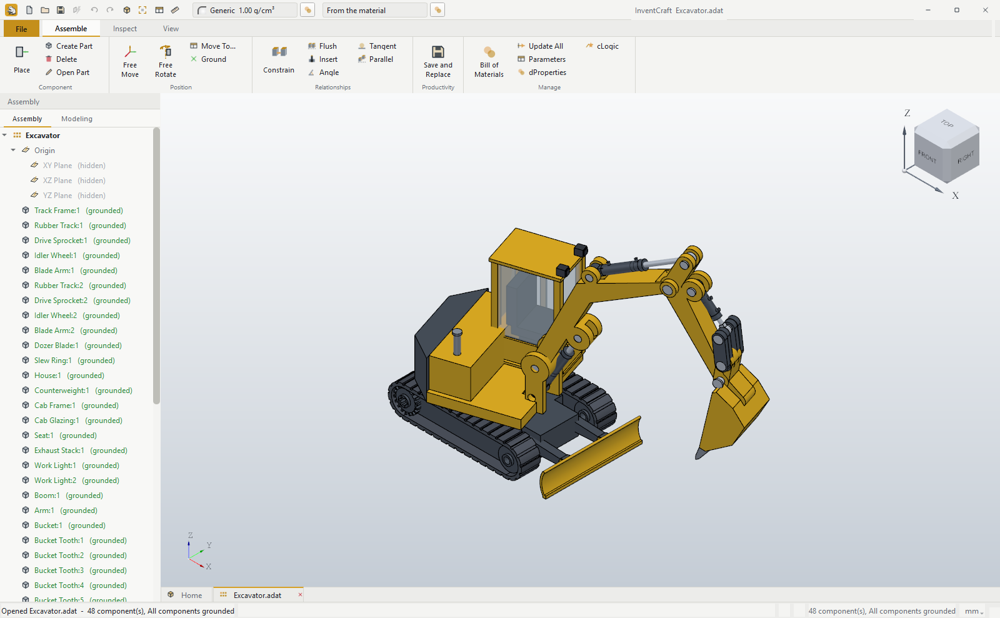
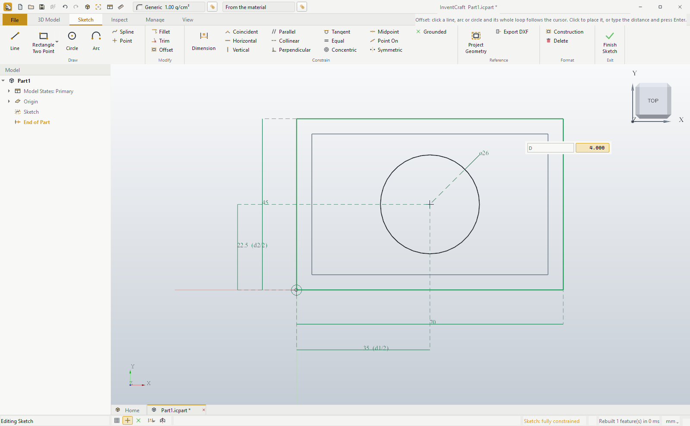
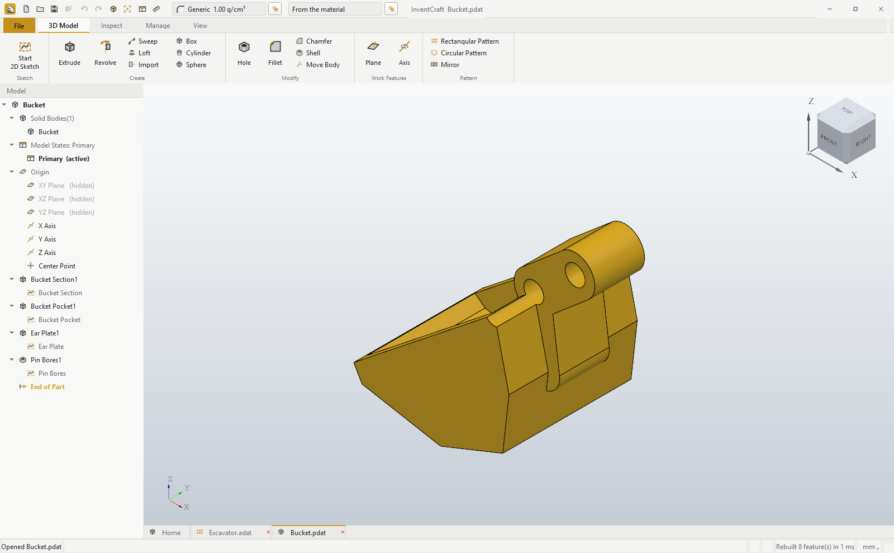
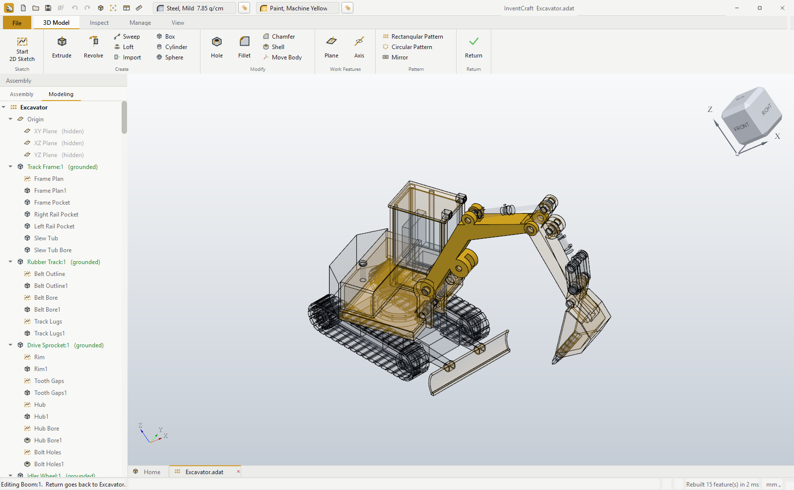
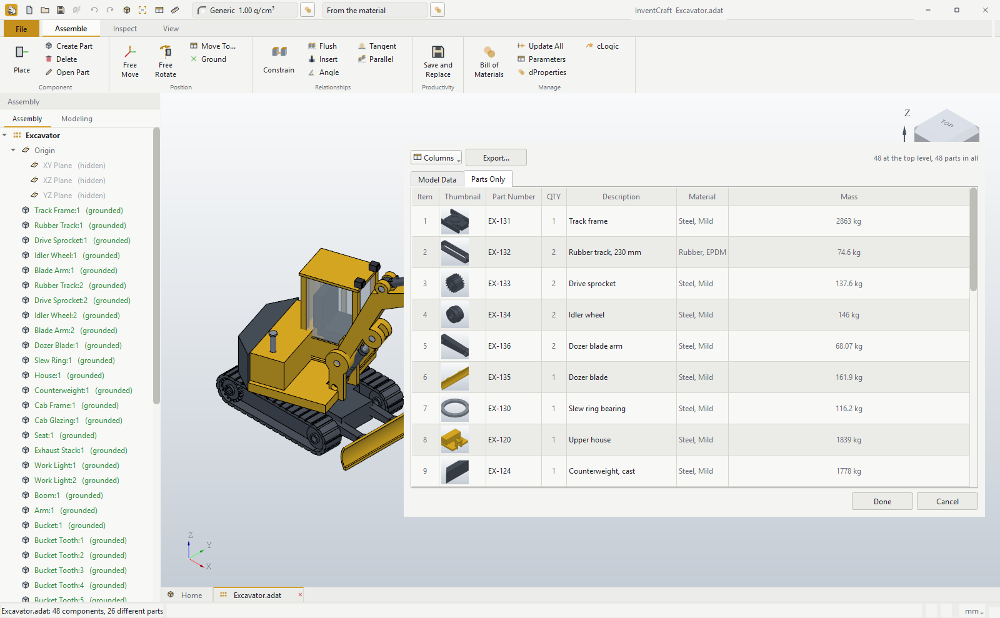
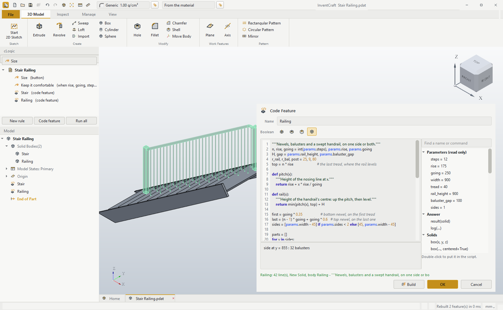
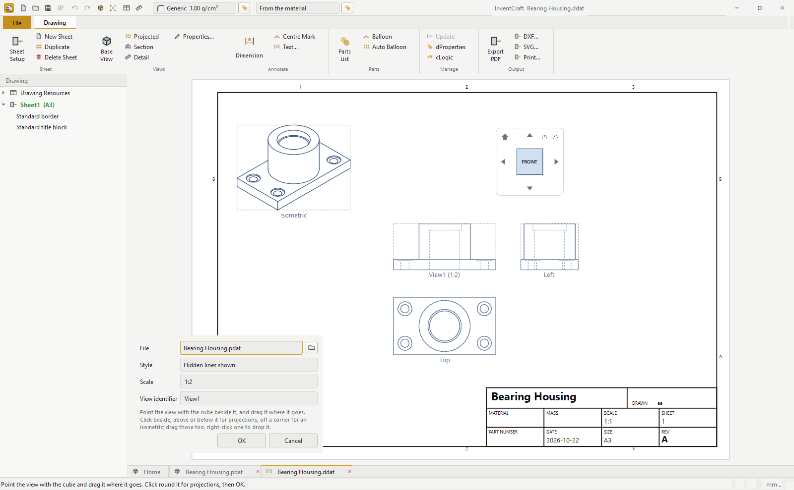
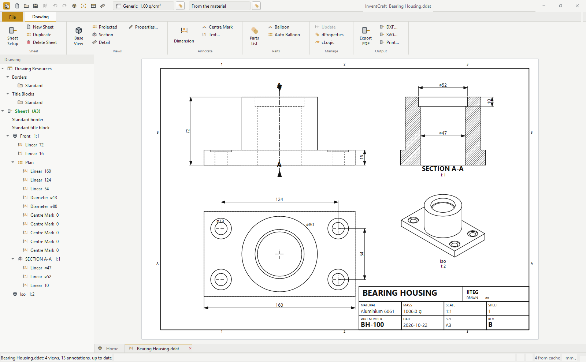
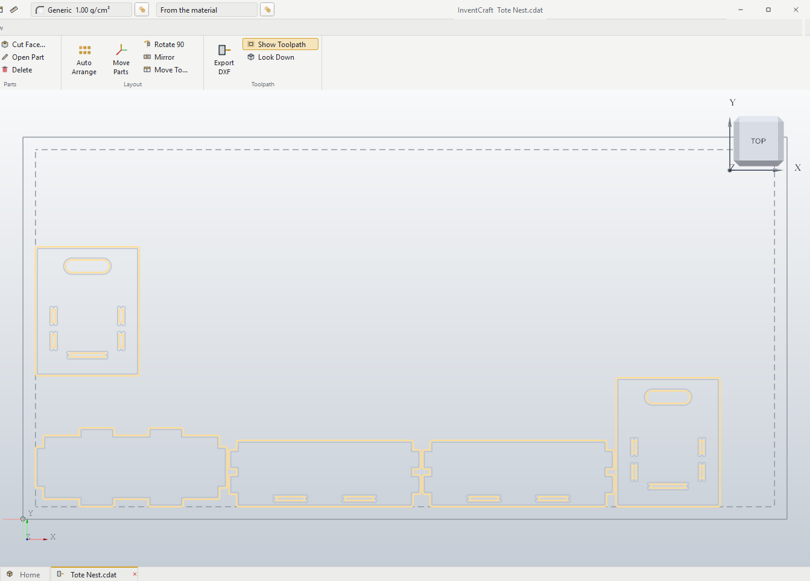

The same free, open source CAD, with a new name and a bigger home.
If you used DATUM, you already know InventCraft. Only the name has changed. It sketches, models, assembles, draws and cuts exactly as before, and your parts, assemblies and drawings open just as they did.
A CAD program grows with the people around it: the person who reports a bug, sends a fix, asks for a feature or shows it to a friend. A project built by one person can only reach so far on its own. To give InventCraft a real chance to succeed, it is joining the family of Craft apps around ArtCraft, the open source creative studio at getartcraft.com.
Being part of a bigger family puts InventCraft in front of a much larger community of people who make things. More people using it means more feedback, more eyes on the code and more contributions, and that is what keeps an open source project alive and moving forward.
InventCraft, formerly DATUM, sketches, models, assembles, draws and cuts. It is built around a real geometry kernel and a real constraint solver, and it is small enough to learn in an afternoon.
108 MB · Windows 10 and 11, 64-bit · installs without an administrator prompt · updates itself · Linux

Most CAD packages assume you already know CAD. InventCraft does the same things the big ones do — history-based modelling, constrained sketches, assemblies, proper drawings — with far fewer places to get lost. If you have used Inventor or SolidWorks, it will feel familiar. If you have not, this is a gentler place to start.
Draw, then say what must stay true. Coincident, parallel, tangent, equal, symmetric. A numeric solver keeps every rule satisfied while you drag.
OpenCASCADE underneath, the same kernel FreeCAD uses. Extrude, revolve, sweep, loft, fillet, chamfer, shell, holes, patterns and booleans, all on a feature tree you can go back and edit.
Base and projected views with hidden line removal, sections with hatched cut faces, details, dimensions bound to the model, a title block that fills itself in, and true vector PDF.
Place parts, constrain them mate or flush with an offset, and the solver works out where everything goes. Change a part in its own tab and the assembly follows.
Nest flat parts on a sheet, generate cutter-compensated toolpaths with leads and corner relief, and export DXF for a plasma table or a router.
InventCraft checks for new versions and downloads only the files that actually changed. A typical update is a few megabytes, not another install.
InventCraft is MIT licensed. Read it, learn from it, fork it, build something else on top of it. No permission needed and nothing to ask anybody for.
One window holds everything. Parts, assemblies, drawings and CAM sheets open as tabs along the bottom, the way a CAD package should.
Dimensions can reference each other, so
d1 and (10-2+d2)/2 are both valid
values. The sketch turns white when it is fully constrained
and there is nothing left to move.

Every feature stays editable. Change a parameter near the top and everything below rebuilds, with fillets and holes staying on the faces you put them on rather than jumping somewhere else.

Double-click a component and edit it where it sits, with the rest of the machine ghosted around it and the assembly still in the tree. Go as deep as the assembly does: Return comes back up exactly one level at a time.

Model Data lists what the assembly places, Parts Only every part counted right through the sub-assemblies, with what each weighs from its material. Pick the columns from every dProperties field, and change a part number or a description in the table: it goes back into the part.

cLogic drives a model from Python, the language InventCraft itself is written in. Rules move parameters, sketch dimensions, components and properties, and open forms with sliders that reshape the model as you drag. Code features build geometry from a loop, so a staircase with every tread, baluster and handrail is one feature that follows its parameters. Every name a script can use is listed beside the editor, and nothing runs until you allow it. What it can do

Base View puts the part on the sheet at once, drawn, with a view cube beside it to point it. Drag it where it goes and click round it for its projections, an isometric off a corner. Nothing is made until OK, and a double-click brings it all back.

Views generate from the model and know when it has changed. Dimensions are picked on the view and follow the model when it changes, sections hatch their cut faces according to the material, parts lists count the assembly, and balloons renumber themselves when the list does.

Lay flat parts out on a sheet, set the tool and the kerf, and InventCraft offsets the toolpaths, adds leads and puts relief in the inside corners so slots actually fit. Out comes a DXF.

Worth knowing up front, so nothing is a surprise.
Asked for by the people using InventCraft, and next in line. This list is read live from my own task board, so it is always what I am actually working towards. Missing something? Tell me.
Free, no account, no licence key. It updates itself from then on.
InventCraft 0.3.1 for WindowsInventCraft is built by one person at IITEG. Mail goes to a real inbox and gets read.
Tell me what you were doing and what happened. If InventCraft showed an error, the details box in it can be copied straight into the mail.
datum@iiteg.comFeature requests are welcome, particularly from people learning CAD. The rough edges are easiest to see from the outside.
datum@iiteg.comIITEG does mechanical design, electronics and manufacturing. InventCraft is one of the tools we built for ourselves along the way.
iiteg.com